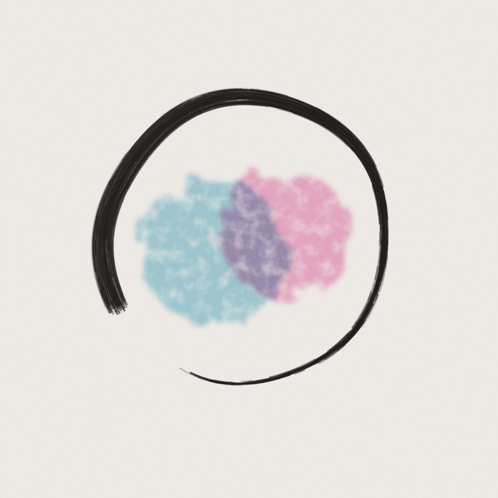
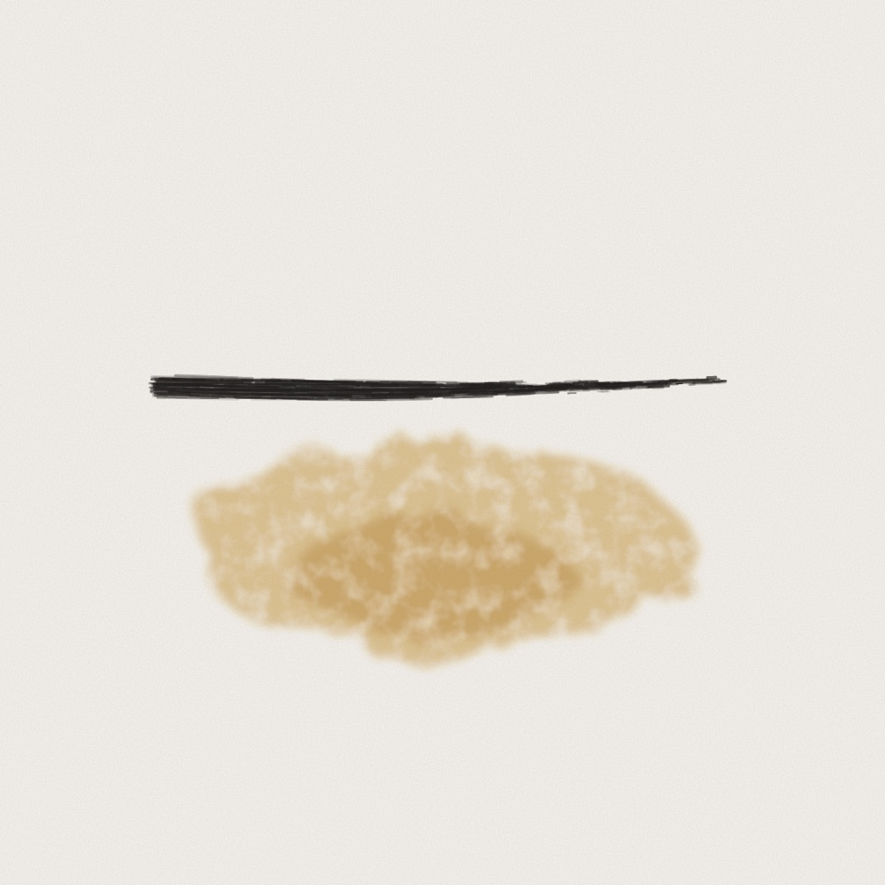
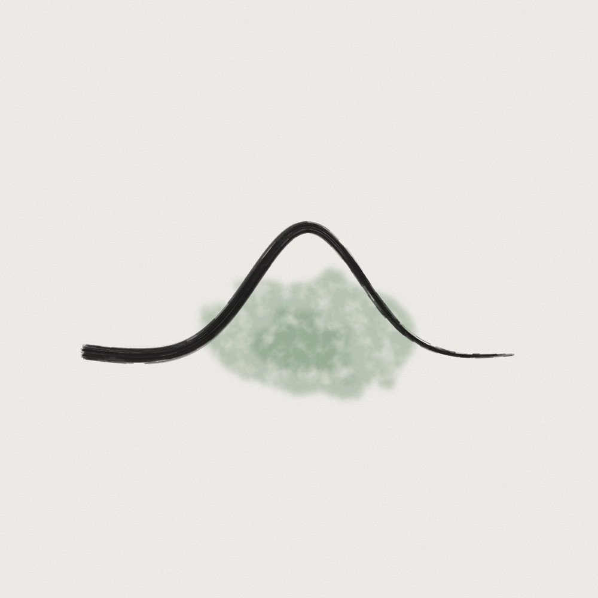

Twenty papers on AI consciousness, arranged by the theories they rely on, and where the skeptics and the optimists part ways.

Twenty papers on AI consciousness, arranged by the theories they rely on, and where the skeptics and the optimists part ways.

Ask a model how sure it is: it says “95%”, right or wrong. Inside, it knew the difference.

A close reading of the paper that found a small place inside language models where the thoughts they could say gather. It also holds what they leave unsaid.